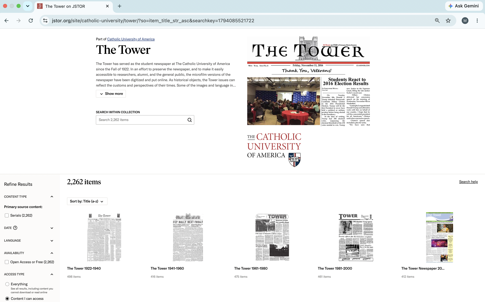
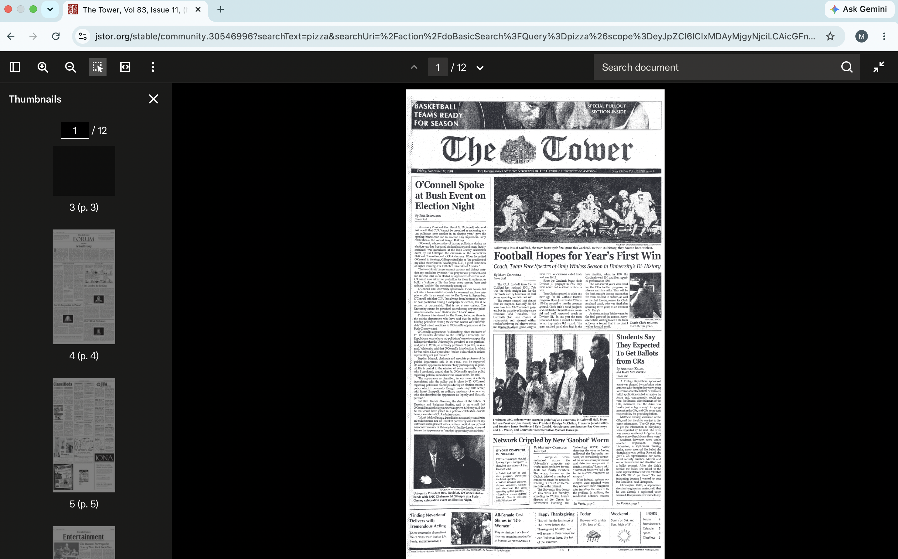
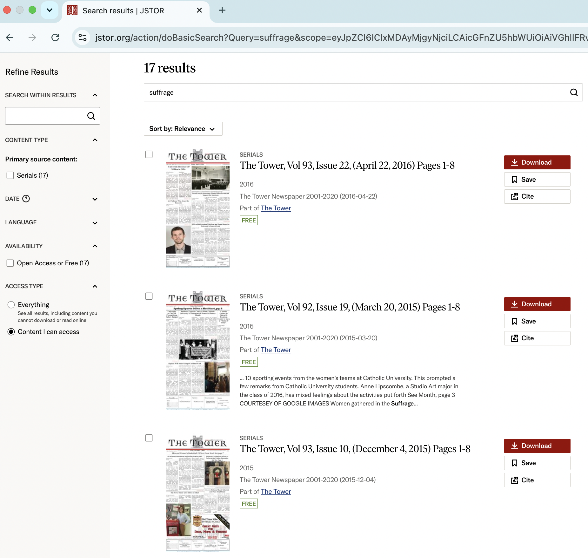
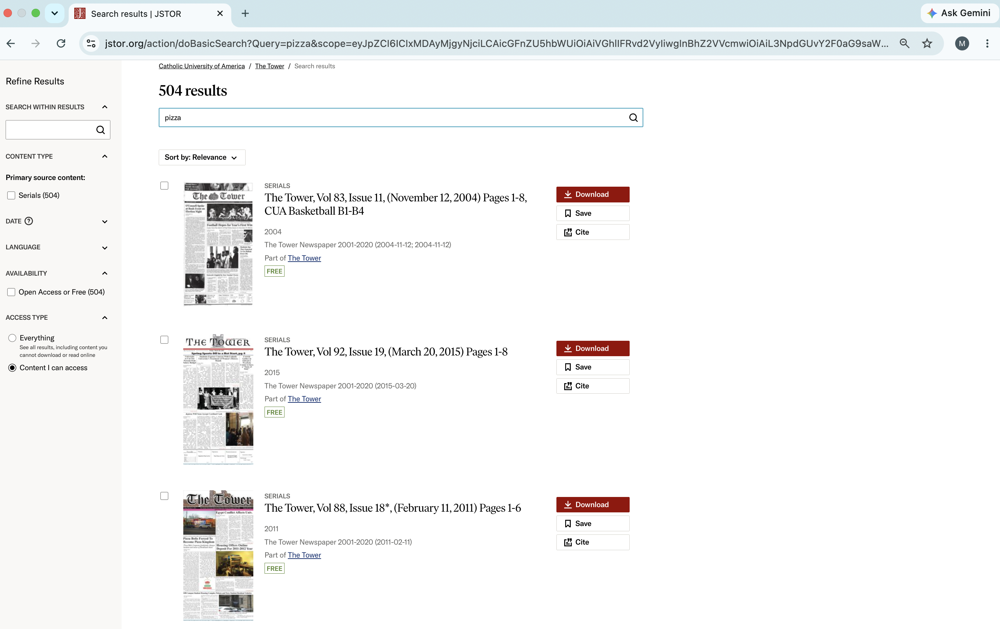

| Inputs | Outputs |
|---|---|
| Searching “suffrage” in the “Search within collection” search box | Seventeen results automatically sorted by “relevance” appear. Each result displays an image of the front page of the newspaper, the type of primary source content (which is always listed as “serials” in this collection), the volume and issue numbers, the date published, the relevant 20-year collection the newspaper is part of, the number of pages of each result, and download/save/cite options. |
| Clicking “Sort by: Relevance” | A dropdown menu appears that lists three options: “relevance,” “newest,” and “oldest.” |
| Clicking “Oldest” in the “Sort by:” dropdown menu | The original 17 results still remain, but the order has changed so that now the newspapers are listed with the earliest publish date first and then proceeding in chronological order until the user ends with the most recent/newest result at the end. |
| Clicking “The Tower, Vol 5, Issue 15, (February 2,1927) Pages 1-4” | A new page opens that lists the newspaper name, volume and issue number, publication date, and number of pages at the top in large, bold print. Underneath there is a tag that links to the 20-year period within the collection to which the newspaper belongs. Then the publication date and number of pages of the newspaper are listed again in smaller print. Underneath this there is the specific newspaper’s URL, which can be clicked to copy to the user’s clipboard. Next to this are three buttons that give users the option to cite, save, and download the newspaper. Below the users finds a menu with “About this collection,” “Item details,” “Search matches,” and “Terms and copyright.” The only drop down menu that loads as open is the “Terms and copyright” menu. The majority of the screen displays the newspaper, with a menu at the top displaying various icons for navigating the newspaper. These icons do not have written labels. There is also a search bar in the top right corner for term searches within the specific paper. |




After reviewing the usability test results and comparing them with my own, it is clear that both my test user and I were frustrated with the default sorting technique that the database uses when pulling up search results. The “relevance” that it sorts the results by is not explained on the site (or at least not in a place that either of us could find after lots of time exploring the site), which makes it a fairly useless sorting tool. I would recommend that they allow the user to choose their own default sorting technique that will apply to all their searches, or at least change the site’s default sorting technique to one of the options that lists results in chronological order based on publication date.
Apart from our similar dislike for the sorting tool, we both enjoyed our time using the site overall. The test user felt that the site offered a comprehensive and complete collection of past newspaper issues and I agree that the site felt complete in a way that didn’t feel overwhelming with too much material, but instead felt easy to use and like it had a lot of interesting information to offer. We agreed that the information was organized in a way that was user-friendly and consistent with other sites like it. Our only source of disagreement was in the way the site accounts for user error. While he didn’t poke around for long enough to encounter an error, I was able to search up terms that found no results and felt that the site did an acceptable job of helping users correct their mistakes.